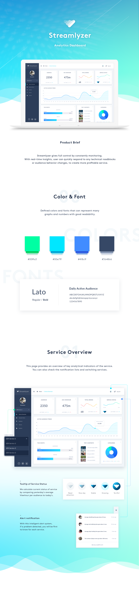
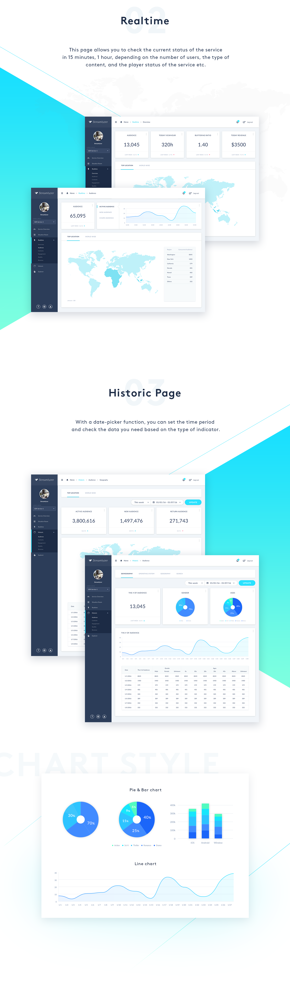
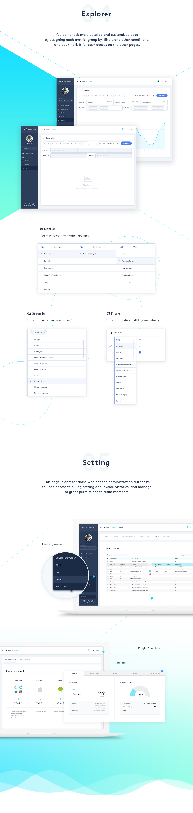
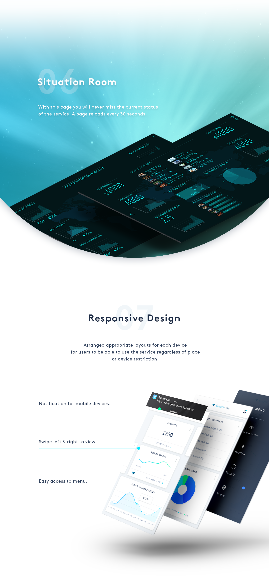

May, 2015 ~ Aug, 2016 | UX/UI Designer
Streamlyzer is a global service and B2B solution that provides video streaming analytics dashboard where various companies around the world have a vast amount of user & content data and can view real-time and historical information related to video streaming. For over 6 months, As a solo designer in the team, I redesigned the overall UX of main features and the entire interface of dashboard. In particular, I did my best to improve the readability of the dashboard, which had to show a lot of numbers and chart data. I made whole pages easy to understand various metrics. And I adjusted the menu structure of the sidebar and added the floating buttons to easily move and to access from any page.
Streamlyzer's main customers are video streaming service providers, which use web dashboards to identify the characteristics of various users and maximize revenue. Also, they use dashboard for real-time monitoring of streaming content for immediate response to quality control. In initial service planning stage, our team focused on improving usability by relying on internal experty. We has found the following obvious problems for customers in using this service. 1. Readability : Although it is important to have a large number of data to be represented by several graphs and numerical values, it was not easy to grasp the importance of information at a glance because too much information was on one page. 2. Branding : There was no color theme or guide or identity set by the brand, so it was difficult to express it graphically beautiful and easy to read.
1. Set the new color theme : Renewed color theme settings and branding tailored to the nature of the Streamlyzer service, allowing users to quickly identify data where data visualization such as graphs is required. 2. Responsive Design : Arranged appropriate layouts for each device for users to be able to use the service regardless of place or device restriction. 3. Get more Readability : In order to be able to see a large number of data and graphs at a glance, minimized the use of color and gave differences in contrast. Fonts were also different in thickness for emphasis.
During the work for re-designing this dashboard for several months, I designed over 90 different screens and rearranged the layout for the mobile and tablet devices for the future release. *Due to confidential issue, please understand that I can not disclose all page designs.
   As I designed the web dashboard service for the first time, I've been struggling with data visualization. Due to the nature of the service, it was necessary to draw all sorts of massive data related to streaming analytics with a bunch of numbers and charts. However, it was too difficult to understand the technology and terminology of this industry. Also, as I was designing a B2B product, it was not easy to gather user feedback in terms of usability. Therefore, I started to design the parts where I could get the greatest result if I solved it first in this service. Because, there were neither brand identity nor featured characteristic, I redesigned the dashboard theme while making a new BI. And I used many graph type that is easy to see at a glance by non-specialists and used high-visibility fonts and colors to improve the readability of the data. After that, based on the feedback from the user, I placed the features that need to enhance the function and accessibility to the top of the menu and made it convenient for the users.